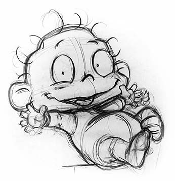

LEARN THE TECHNIQUES OF THE PROFESSIONAL ANIMATORS OF KLASKY CSUPO!
With never before seen production work on some of your favorite KC cartoons including Rugrats, Wild Thornberrys, AAAHH!!! Real Monsters, Santo Bugito and more!
Part 1: Creating Characters Out of Basic Shapes
Part 2: Determining Height and Basic Details
Part 3: Turnarounds
Part 4: Movement Sketches
Part 5: Off Model/On Model
Part 6: Advanced Animation Drawing
Part 7: Backgrounds
Part 8: Coloring and Props